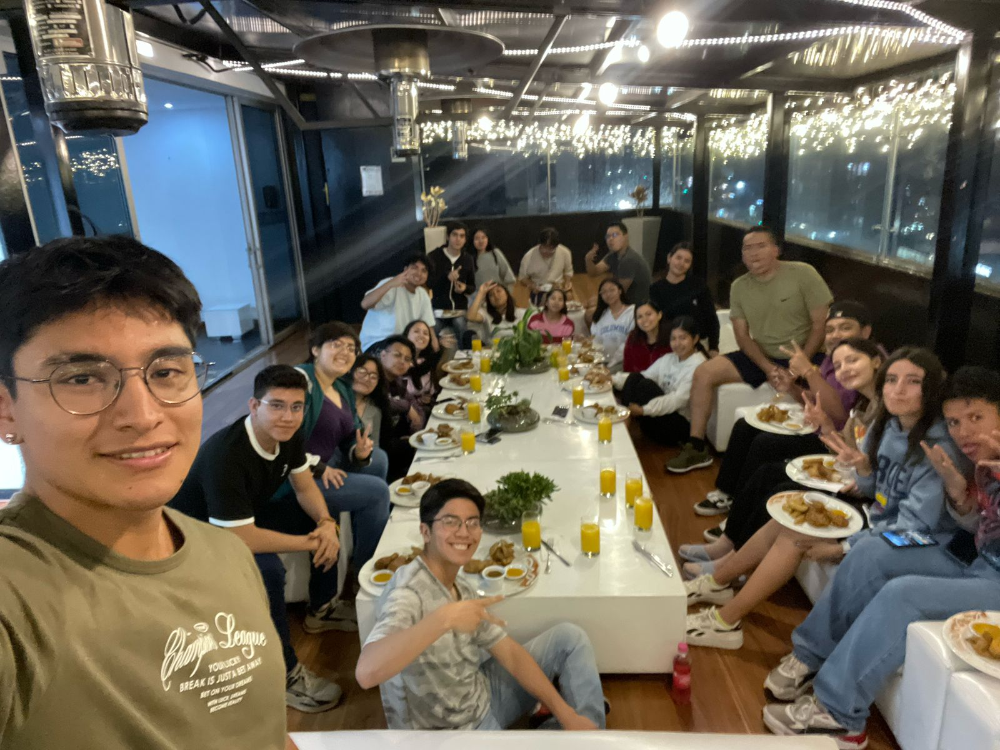
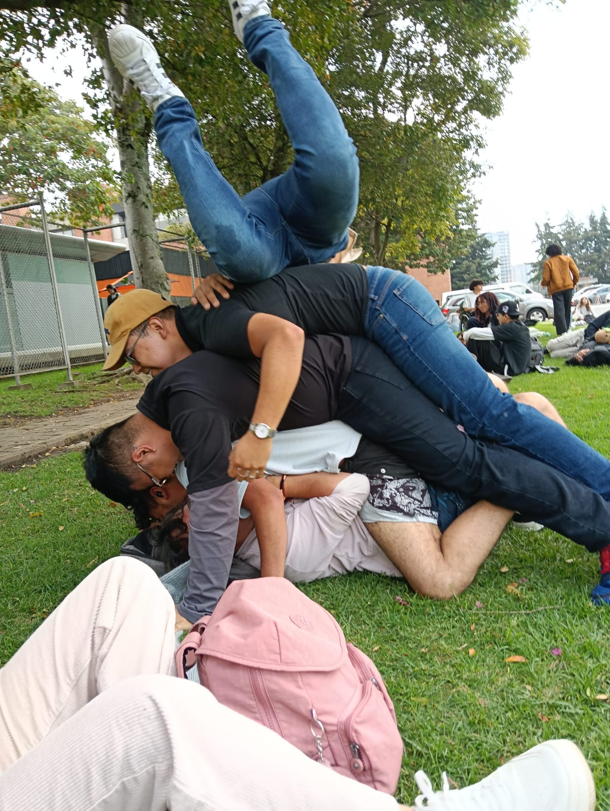
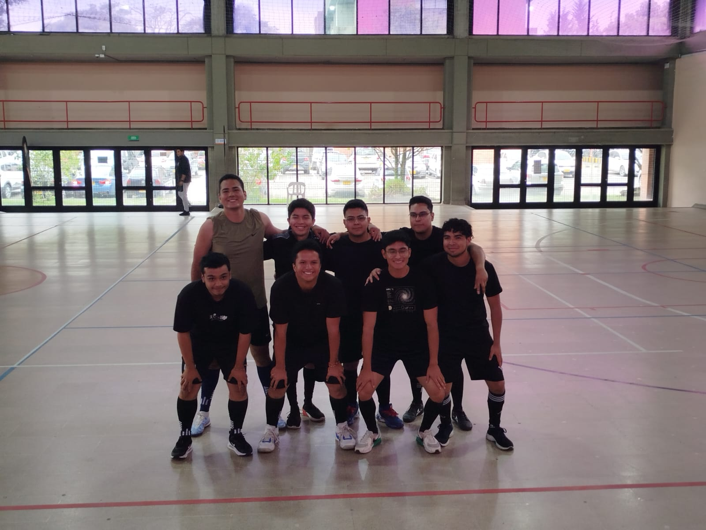
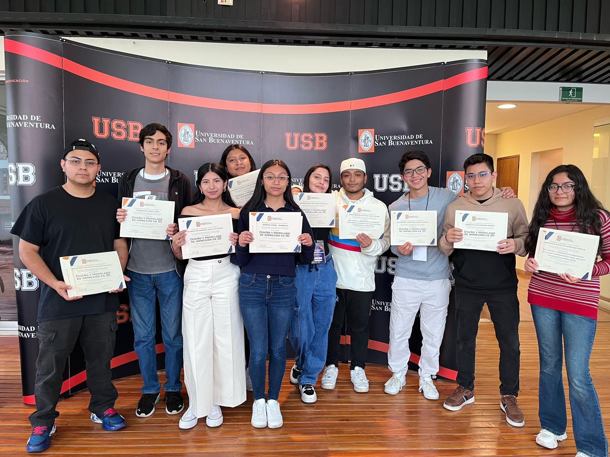

Pagina creada con el fin de mostrar pruebas de programaciones
PAGINA PRINCIPAL DE ARDUINO
CURSO COLOMBIA
La presente pagina fue creada con el fin de crear un repertorio de los ejercicios realizados en el curso "Era digital y transdisciplinariedad: unificando herramientas para aplicar tecnologias emergentes" impartido por el Ingeniero electronico Jhonatan Paolo Tovar Soto en la Universidad de San Buenaventura sede Bogota. El curso fue iniciado con sesiones teoricas hablando generalidades de la era digital. Las siguientes sesiones despues de el acercamiento teorico, fueron el comenzar a realizar programaciones con lenguaje C++ en tinkercad con funcionalidades basicas como en parpadeo de un led, la programacion de Sensores ultrasonicos asi como la configuracion de entradas analogicas por medio de potenciometros virtuales para cumplir ciertas condiciones y realizar tareas especificas. La ultima semana de sesiones fue el realizar estos ejemplos en fisico, utilizando como software el ID de Arduino y como tarjeta fisica ESP32, haciendo de manera fisica los ejemplos virtuales hechos previamente, a esto adicionando las funciones de Bluetooth y WiFi para el envio y capturado de informacion.
La experiencia de formar parte de este grupo de intercambio fue muy grata, me lleno de muchas buenas experiencias fuera del ambito academico, muchos lugares visitados los cuales se quedan marcados en la memoria (y en fotos de instagram), nuevas amistades las cuales espero mantener a lo largo de la vida que a pesar de que fue muy breve el tiempo de tratarlas se convirtieron en una parte importante de mi. De las mejores experiencias en la vida a lado de personas que lo hicieron asi.
   